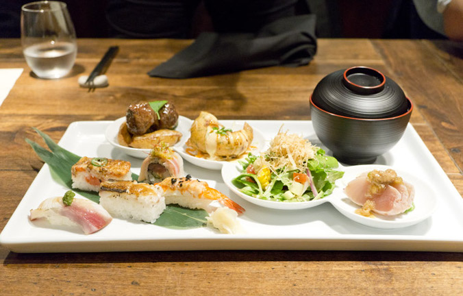
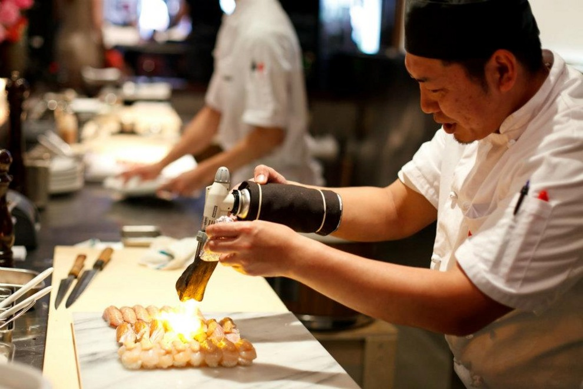
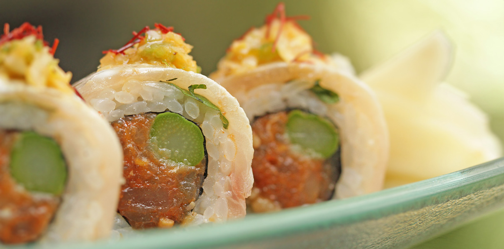
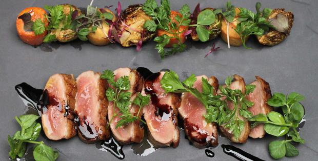
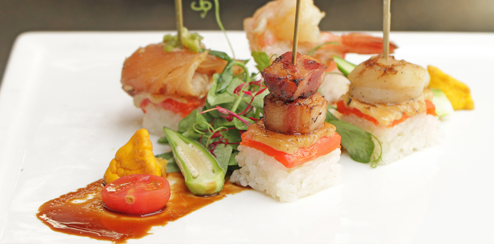
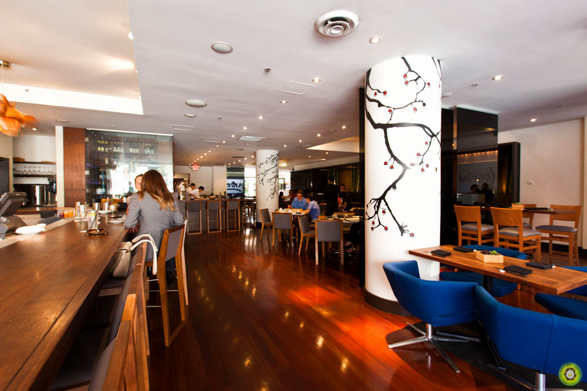

An Exploration of Vancouver Eats
Date Night at Minami

Ever wondered the difference between Miku and Minami? Well, one is situated in Vancouver Waterfront and one is in Yaletown. Besides the obvious, they are both sister restaurants that specializes in Aburi (flamed sushi). As mentioned in our previous post, this is nothing new! Both restaurants are named after the owner’s daughters. There is also a secret sauce tailor-made for each variety of fish before torching the delicious dish. I’m not a big fan of raw fish, so this is definitely a bonus for me! (If it is Aburi sushi from Miku or Minami, that’s going in my mouth. I don’t care if it’s ‘torched’ and not ‘fully cooked’.)

Famous Minami Aburi Sushi

Minami’s pressed Aburi sushi is also made with fine ingredients and there is a bit of charcoal on each sushi, leaving an aroma and molecules of flavor in your mouth. The restaurant also offers quite a variety of entrée dishes. From Miso-baked sablefish to Yasai maki chicken, both are a must try!

Lunch Special everyday at Minami

Beautiful Food Art at Miniami Restaurant in Yaletown!

On a date night and don’t know which restaurant to pick? Choose Minami. This restaurant has an open bar and a cozy area to seat customers in mini booths. You can also reserve a room for your birthday parties if you feel like spending a fortune that night. Minami has the perfect ambience for a date, while Miku is much more suited for family and friends. I’m proud to say, Vancouver has several amazing Japnaese restaurants and Minami is on the top list!